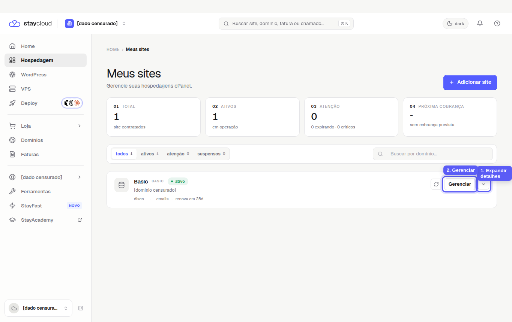
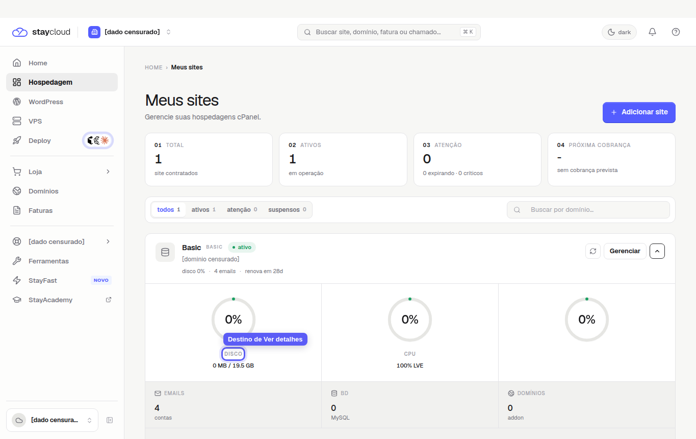
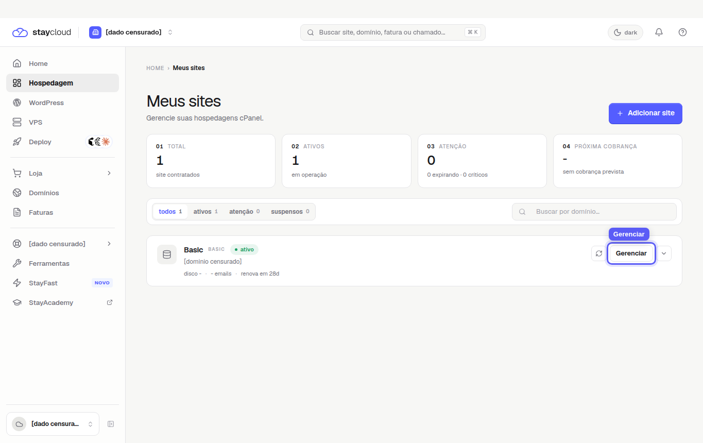
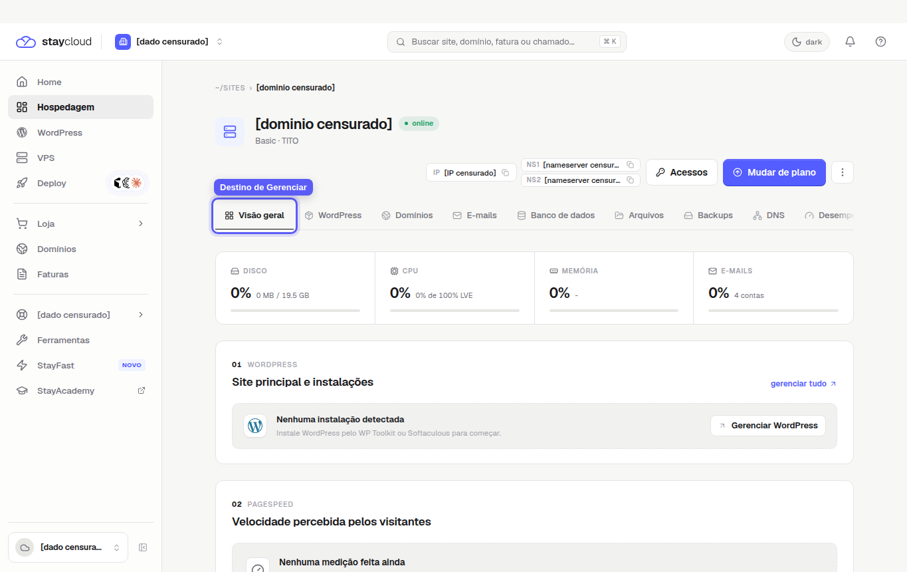

Qual a diferença entre Ver detalhes e Gerenciar no Painel Novo da StayCloud
Entender Ver detalhes e Gerenciar StayCloud ajuda a escolher o caminho certo dentro do Painel Novo. Os dois controles aparecem no card do serviço, mas não têm o mesmo objetivo: um mostra informações resumidas do serviço na própria listagem, enquanto o outro abre a área de gerenciamento com menus e recursos operacionais.
Na interface validada para este tutorial, o caminho de detalhes aparece como um botão de seta com o rótulo acessível Expandir detalhes. Ele cumpre o papel de visualizar detalhes do card. Por isso, se você estava procurando por “Ver detalhes”, procure o controle de expansão ao lado de Gerenciar.
Onde aparecem Ver detalhes e Gerenciar
Na página Hospedagem, cada serviço aparece em um card. À direita do card ficam os controles principais: o botão Gerenciar e o botão de seta usado para expandir os detalhes do serviço.

Para que serve Ver detalhes no Painel Novo
No fluxo validado, o controle de detalhes não abre uma nova página. Ao clicar na seta Expandir detalhes, o próprio card aumenta e exibe informações rápidas do serviço, como uso de disco, CPU, RAM, contas de e-mail, banco de dados e domínios addon.
Use esse caminho quando você precisa apenas conferir uma informação rápida sem entrar na administração completa da hospedagem. Ele é útil para confirmar o estado geral do serviço, verificar indicadores visíveis no card e evitar abrir a tela errada quando a intenção é somente consultar dados básicos.
Quando usar Ver detalhes

Use a expansão de detalhes quando quiser conferir uma visão rápida do serviço antes de tomar qualquer ação. Esse caminho não deve ser usado para alterar configurações, acessar arquivos, criar e-mails ou mexer em recursos internos da hospedagem.
Para que serve Gerenciar no Painel Novo
O botão Gerenciar abre a página interna do serviço. Na validação feita para este tutorial, esse caminho levou para a área de visão geral da hospedagem, com abas como WordPress, Domínios, E-mails, Banco de dados, Arquivos, Backups, DNS, Desempenho e Plano.
Esse é o caminho correto quando você precisa acessar recursos operacionais do serviço. Por exemplo, se o objetivo for encontrar arquivos, abrir o cPanel, acessar contas de e-mail ou consultar áreas internas da hospedagem, comece conferindo se o serviço está correto e depois clique em Gerenciar.
Quando usar Gerenciar


Resumo da diferença entre os botões
- Ver detalhes / Expandir detalhes: mostra informações resumidas no próprio card do serviço.
- Gerenciar: abre a página interna do serviço para acessar recursos e menus da hospedagem.
- Quando usar detalhes: para consulta rápida de indicadores e informações gerais.
- Quando usar Gerenciar: para entrar no serviço e localizar recursos operacionais.
Como saber qual opção escolher
Se você quer apenas conferir dados visíveis do card, como consumo, status ou quantidade de recursos, use a opção de detalhes. Se você precisa executar uma navegação dentro do serviço, use Gerenciar.
Antes de clicar em Gerenciar, confira o nome, o domínio e o status do serviço. Essa checagem evita abrir a hospedagem errada, especialmente em contas com mais de um site. Depois de entrar no serviço, você pode seguir para áreas específicas, como localizar arquivos no Painel StayCloud ou acessar o cPanel pelo Painel Novo.
Erros comuns
- Clicar em detalhes esperando abrir a tela completa de administração.
- Clicar em Gerenciar no serviço errado por não conferir domínio ou nome antes.
- Confundir indicadores do card com menus de configuração.
- Prestar atenção em alertas ou áreas próximas e ignorar o botão correto.
Dúvidas frequentes
Ver detalhes e Gerenciar abrem a mesma tela?
Não. No fluxo validado, o controle de detalhes expande informações no próprio card, enquanto Gerenciar abre a página interna do serviço.
Qual botão devo usar para acessar os recursos da hospedagem?
Use Gerenciar. Ele abre a área em que ficam as abas e recursos operacionais do serviço.
Por que preciso conferir o serviço antes de clicar em Gerenciar?
Porque contas com mais de um serviço podem ter cards parecidos. Conferir o domínio e o status reduz o risco de acessar a hospedagem errada.
Conclusão
A diferença entre Ver detalhes e Gerenciar StayCloud está no nível de acesso. A opção de detalhes serve para consulta rápida no card, enquanto Gerenciar abre a administração do serviço. Sempre confira o serviço antes de avançar e escolha o botão conforme a ação que você precisa realizar.
SEO preparado
- Palavra-chave
- Ver detalhes e Gerenciar StayCloud
- Título SEO
- Ver detalhes e Gerenciar StayCloud: qual a diferença?
- Slug
- ver-detalhes-gerenciar-staycloud
- Meta description
- Entenda a diferença entre Ver detalhes e Gerenciar StayCloud, saiba qual botão utilizar e evite acessar a área errada no Painel Novo.
- Categoria
- Painel novo
- Status
- SEO preparado localmente. Rank Math real será validado somente após aprovação e criação no BetterDocs.